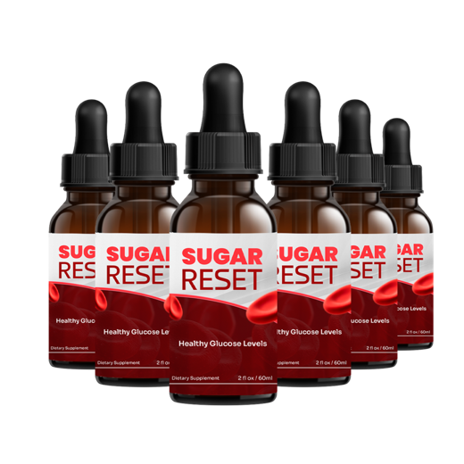
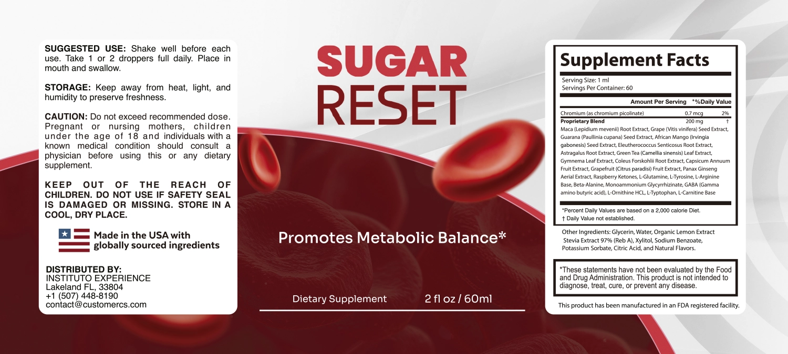

Does Sugar Reset Work? The Ingredient Evidence vs the Dropper
Gymnema and chromium have real research behind them. The trouble is how little of each fits into one milliliter shared by 22 ingredients.
Key takeaways
- Some ingredients have a case. Gymnema, chromium and green tea have each been studied for blood sugar, with small and mixed results.
- The doses are the problem. One milliliter holds 0.7 mcg of chromium and a 200 mg blend split across 22 ingredients. Studies use far more of the key ones.
- The blend hides the split. The label gives 200 mg in total but not how much gymnema or green tea you get.
- It isn't a diabetes treatment. Sugar Reset is sold to support metabolic balance. Never stop or change glucose-lowering medicine because of it.
- Habits move the numbers. Modest weight loss, regular activity and fiber have far stronger evidence than any drop of this blend.
Does Sugar Reset work? Not in any proven way. It contains gymnema, chromium and green tea, which have small, mixed research for blood sugar, but each milliliter holds just 0.7 mcg of chromium and a 200 mg blend split among 22 ingredients. That's far below studied doses. It may suit a general wellness routine; it doesn't replace diabetes care.
Below, we look at the ingredients with the strongest evidence, compare what's in a dropper with what researchers use, and lay out what actually changes blood sugar. For the price, refund and our overall verdict, see the Sugar Reset review; for every one of the 22 ingredients, see Sugar Reset ingredients.

Sugar Reset: check today's price
A liquid chromium and botanical blend for metabolic balance. One or two droppers a day. Sold only on the official site, with a 60-day money-back guarantee.
See the official price →What is Sugar Reset?
Sugar Reset is a liquid dietary supplement in a 2 fl oz (60 ml) dropper bottle. The front label says "Promotes Metabolic Balance." Directions: shake well, take one or two droppers daily, place in the mouth and swallow. A serving is 1 ml, so one bottle holds 60 servings and lasts 30 to 60 days depending on how much you take.
The Supplement Facts panel lists two things: chromium (as chromium picolinate) at 0.7 mcg, which is 2% of the daily value, and a 200 mg proprietary blend of 22 botanicals and amino acids. The liquid itself is mostly glycerin and water, sweetened with stevia and xylitol and flavored with lemon. The distributor is Instituto Experience in Lakeland, Florida.
Those sweeteners matter if you're watching glucose. Stevia doesn't raise blood sugar, and xylitol and glycerin have a much smaller effect than table sugar, especially in a 1 to 2 ml serving. So the liquid base itself isn't a concern for most people. One practical warning: xylitol is toxic to dogs, so keep the bottle where a pet can't chew it.
How is Sugar Reset supposed to work?
The formula leans on three ideas from blood sugar research, plus a long tail of extras.
- Gymnema may reduce sugar absorption in the gut and, held on the tongue, temporarily blunts the taste of sweetness.
- Chromium is a trace mineral involved in how insulin works; low intake has been linked to poorer glucose handling.
- Green tea catechins have been studied for small effects on fasting glucose and insulin sensitivity.
Around those sit maca, panax ginseng, African mango, grape seed, guarana and others, several of which are more often marketed for energy or weight than for glucose. We go through them all on the ingredients page. Here, we'll focus on the three that carry the blood sugar argument.

What does the research say about gymnema?
Gymnema sylvestre is a climbing plant used for centuries in Ayurvedic medicine, where its Hindi name roughly translates as "sugar destroyer." Its leaves contain gymnemic acids, which can block sweet receptors on the tongue for a while. Chew a leaf and sugar briefly tastes like sand.
For blood sugar, the research is small. A handful of trials, mostly in people with type 2 diabetes and often without rigorous blinding, reported modest drops in fasting glucose or A1C with standardized extracts, usually around 200 to 800 mg a day. Larger, better designed trials are scarce. The US National Center for Complementary and Integrative Health describes the evidence for herbs like this as limited.
The liquid format adds one interesting detail. Because you hold Sugar Reset in your mouth before swallowing, gymnema could in principle dull sweet taste for a short time. Whether a dropper carries enough to do that, nobody can tell from the label, since the gymnema amount isn't printed.
Does the chromium in Sugar Reset do anything?
Almost certainly not, at this dose. The label lists 0.7 mcg of chromium per milliliter. The adequate intake for adults is 20 to 35 mcg a day, and the US diet usually provides that through whole grains, meat, broccoli and other foods. Two droppers give you 1.4 mcg, a small fraction of what you already eat.
The research doses are much higher. Chromium picolinate trials for blood sugar typically use 200 to 1,000 mcg a day, and even at those amounts the NIH Office of Dietary Supplements calls the results inconsistent. Some studies found small improvements in people with type 2 diabetes. Others found nothing. At 0.7 mcg, Sugar Reset's chromium is a label entry, not a dose.
What about green tea, ginseng and African mango?
Green tea has the deepest research of the three. Pooled studies suggest green tea or its catechins may lower fasting glucose slightly, though results are mixed and the amounts are usually hundreds of milligrams of extract or several cups of tea. Brewed tea has the advantage of being cheap, caffeine you can measure, and a drink that replaces something sweeter. If you like it, a couple of unsweetened cups a day is a simpler way to get catechins than any blend.
Panax ginseng has small trials on post-meal glucose, but they mostly use the root, often at a gram or more. Sugar Reset lists panax ginseng aerial extract, meaning the parts above ground, which isn't what most of that research tested. African mango seed extract has a few small weight and metabolic studies, typically at about 150 mg twice a day, and they were small enough to need confirming.
Each of these is a reasonable ingredient to look at. None has strong evidence for lowering blood sugar on its own, and none is present in a disclosed amount here.
How much of each ingredient is in a dropper?
Here's the math the label makes possible. The blend is 200 mg per milliliter. Divide by 22 ingredients and the average is about 9 mg each, or 18 mg at two droppers. Some will be more, some less; ingredients are listed by weight, but the panel doesn't say how much of each.
| Ingredient | Typical amount in studies | In Sugar Reset (per 1 ml) |
|---|---|---|
| Chromium | 200 to 1,000 mcg | 0.7 mcg |
| Gymnema extract | About 200 to 800 mg | Part of a 200 mg blend; not disclosed |
| Green tea extract | Hundreds of mg | Part of a 200 mg blend; not disclosed |
| Panax ginseng | Often 1 g or more of root | Aerial extract; not disclosed |
| African mango seed | About 300 mg | Part of a 200 mg blend; not disclosed |
| Whole blend, 22 ingredients | No studies of this blend | 200 mg (about 9 mg each on average) |
Read the right-hand column and the conclusion writes itself. Even if the entire 200 mg were gymnema, it would sit at the low end of the studied range, with nothing left for the other 21 ingredients. A proprietary blend means nobody outside the manufacturer can check the real amounts against research.
So does Sugar Reset work for blood sugar?
Ingredient evidence isn't product evidence. There's no published trial on the Sugar Reset formula, and the doses of its best-studied ingredients are either tiny (chromium) or unknown and likely small (gymnema, green tea). On that basis, you shouldn't expect a measurable change in fasting glucose or A1C from Sugar Reset alone.
What it can honestly offer is what the label says: support for metabolic balance as part of a broader routine. Some people like a daily ritual that reminds them to watch sugar. If that's the role you have in mind, and you understand it isn't a treatment, it's a fair use. If you're hoping it will bring down a high reading, it's the wrong tool.
Who might reasonably try it, and who shouldn't bother
A reasonable candidate is an adult with normal or borderline readings, no glucose-lowering medicine, no caffeine sensitivity, who has already started on diet and activity and wants a small daily supplement alongside. Expectations matter more than anything. Think of it as an add-on with a refund window, not a fix.
Skip it if you have diagnosed diabetes and hope to cut back on medication, if your A1C is rising and you haven't seen a doctor, or if you're pregnant, nursing or under 18. In each case the time and money are better spent elsewhere.
Sugar Reset: check today's price
A liquid chromium and botanical blend for metabolic balance. One or two droppers a day. Sold only on the official site, with a 60-day money-back guarantee.
See the official price →What actually helps blood sugar?
The approaches below have far stronger evidence than any supplement blend. In the large Diabetes Prevention Program, adults with prediabetes who lost about 7% of their body weight and exercised 150 minutes a week cut their risk of developing type 2 diabetes by more than half.
| Approach | How strong is the evidence? |
|---|---|
| Losing 5 to 7% of body weight if overweight | Strong: large randomized trials |
| 150 minutes of moderate activity a week | Strong |
| A short walk after meals | Good: lowers the post-meal spike |
| More fiber, fewer refined carbs and sugary drinks | Strong |
| Seven to nine hours of sleep | Good: short sleep worsens insulin sensitivity |
| Prescribed medication | Strong: tested in large trials |
| Gymnema, chromium, green tea supplements | Limited and mixed, even at research doses |
A walk is probably the single cheapest tool on the list. Muscles pull glucose out of the blood when they work, with or without insulin, so a 10 to 15 minute stroll after dinner flattens the spike. Our article on blood sugar and brain fog explains why those spikes and dips also show up as tiredness and fuzzy thinking. More metabolism topics are in our energy and metabolism section.
Where do better-studied supplements fit?
If you're set on a supplement, single ingredients at disclosed doses are easier to judge. Berberine, for example, has more consistent glucose research than gymnema, though it also has real drug interactions and digestive side effects; our piece on berberine covers both. Sugar Reset doesn't contain berberine. Whatever you choose, the same rule applies: talk to your doctor first, keep your medication, and judge it by your numbers.
Can you take Sugar Reset with diabetes medication?
Only after talking to your doctor, and never as a replacement. If you take insulin or a drug that lowers blood sugar, such as metformin, a sulfonylurea or a GLP-1 medicine, gymnema and chromium could in theory add to its effect. At these doses the risk is probably small, but hypoglycemia is serious enough that it's worth asking.
- Never stop or change a prescription because you've started a supplement, even if your readings improve.
- Know the signs of low blood sugar: shakiness, sweating, a racing heart, hunger, confusion or irritability.
- Mind the caffeine. Sugar Reset contains guarana, a natural source of caffeine. The amount isn't listed, so count it if you're sensitive or limit coffee.
- It's not for pregnancy or nursing, or for anyone under 18, per the label.
Our Sugar Reset side effects page covers the full list of cautions and interactions.
How would you know if Sugar Reset is working?
Not by feel. Energy and cravings change with sleep, stress and meals, so a good week can easily be a coincidence. The only fair test is numbers you can compare.
- Fasting glucose: if you already own a meter, check it on waking for a week before you start and keep going for six weeks after.
- A1C: this reflects about three months of blood sugar, so it's the number your doctor will use. Ask whether a recheck makes sense after three months.
- Keep everything else steady, or note what changed. If you also started walking after dinner, that's likely the bigger factor.
Official orders come with a 60-day money-back guarantee. If your readings haven't moved by then, that's your answer, and you'll still have time to ask for a refund. At published prices a bottle costs $49 to $79 depending on the package, which works out to roughly $0.80 to $2.60 a day depending on whether you take one dropper or two. Our review has the full price table.
Frequently asked questions
Can Sugar Reset replace metformin?
No. Sugar Reset is a dietary supplement, not a medicine, and nothing on the label claims to treat diabetes. Keep taking any prescribed medicine and discuss supplements with your doctor before adding them.
Does Sugar Reset contain sugar?
The label doesn't list sugar. It's sweetened with stevia and xylitol and uses glycerin as a base. In a 1 to 2 ml serving these amounts are small. Keep xylitol products away from dogs, since even small amounts are toxic to them.
How long does Sugar Reset take to work?
There's no trial on the product, so no reliable timeline exists. Studies of gymnema and chromium usually run 8 to 12 weeks. Track fasting glucose for at least six weeks and stay inside the 60-day refund window.
Is Sugar Reset good for prediabetes?
It isn't proven for prediabetes. The interventions with strong evidence are modest weight loss, regular activity and diet changes, which cut diabetes risk by more than half in a large trial. Talk to your doctor about a plan.
Should I take one dropper or two?
The label allows one or two droppers daily. Starting with one lets you see how you handle the guarana caffeine and the taste. Ask your doctor first if you take glucose-lowering medicine.
Does Sugar Reset help with sugar cravings?
Gymnema can briefly blunt sweet taste when it touches the tongue, which is why some people take it for cravings. The amount in a dropper isn't disclosed, so whether Sugar Reset does this noticeably isn't known.
Is Sugar Reset sold in stores or on Amazon?
It's sold through its official website, where the 60-day money-back guarantee applies. Third-party listings may not carry the same guarantee.
A supplement, not a treatment
Sugar Reset is a liquid chromium and botanical blend for metabolic balance, one or two droppers a day, with a 60-day guarantee. Check current prices on the official page.
See Sugar Reset's official price →Related: Sugar Reset review: label, price and verdict · Sugar Reset side effects · Blood sugar and brain fog · Berberine and brain health